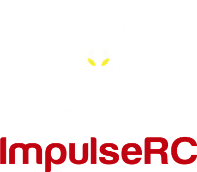

One of the most frustrating experiences for FPV pilots is plugging in their flight controller only to find that Betaflight Configurator can't detect it. The culprit? Windows driver conflicts. The good news is there's a simple, automated solution that fixes these issues in minutes.
Why Connection Issues Happen
Flight controllers use STM32 processors that require two different drivers to work properly with Windows:
The Two Essential Drivers:
Windows often installs the wrong drivers, creates conflicts between driver versions, or leaves "ghost" devices that interfere with proper detection. This results in symptoms like:
- "No device found" in Betaflight Configurator
- Device appears then disappears from Device Manager
- "Unknown USB Device" error messages
- Can't enter DFU mode to flash firmware
- COM port constantly changing numbers
The Solution: ImpulseRC Driver Fixer
ImpulseRC Driver Fixer is a free utility that automatically detects and repairs these driver issues. It's been the go-to solution in the FPV community for years and works with virtually all STM32-based flight controllers.
- STM32 VCP and DFU driver conflicts
- WinUSB driver binding issues
- Ghost/phantom device entries
- COM port conflicts and registry problems
- CP210x, FTDI, and CH340 chipset issues
Download the Tool
We've included the ImpulseRC Driver Fixer directly on our site for easy access. Click the button below to download:
Windows only • Run as Administrator
This tool only modifies Windows drivers—it does NOT touch your flight controller's firmware. It's completely safe to run and you can use it multiple times if needed.
Step-by-Step Instructions
Before You Start:
- Close all configurator software (Betaflight, INAV, BLHeli Suite, etc.)
- Use a quality USB cable – Many issues are caused by charge-only cables without data lines!
- Try different USB ports – USB 2.0 ports often work better than USB 3.0
Running the Driver Fixer
Right-click and Run as Administrator
The tool needs admin privileges to modify drivers. Right-click the downloaded .exe file and select "Run as administrator".
Connect Your Flight Controller
Plug your flight controller into your PC with a USB data cable. Leave it in normal mode (don't hold any buttons).
Click "Install/Repair Drivers"
The tool will scan your system and begin repairing driver issues. Follow any on-screen prompts.
Enter Bootloader/DFU Mode When Prompted
The tool may ask you to put your FC in bootloader mode. Do this by:
- Hold the BOOT button on your FC while plugging in USB, OR
- Use the CLI command
blin Betaflight (if connected), OR - Short the BOOT pads on your FC while connecting
Verify the Fix
Unplug and replug your flight controller, then open Betaflight Configurator. Your FC should now appear in the port dropdown!
Still Having Issues?
If the driver fixer doesn't solve your problem, try these additional troubleshooting steps:
Common Solutions:
If your FC is showing as "Unknown USB Device" with error code 43, this often indicates a faulty USB connection on the FC itself. Try reflowing the USB connector solder joints or check for physical damage.
Summary
Driver issues are one of the most common problems Windows users face when working with flight controllers. The ImpulseRC Driver Fixer provides a quick, automated solution that saves hours of frustration.
Without Fix
Hours of manual driver troubleshooting
With Fix
5 minutes to a working connection